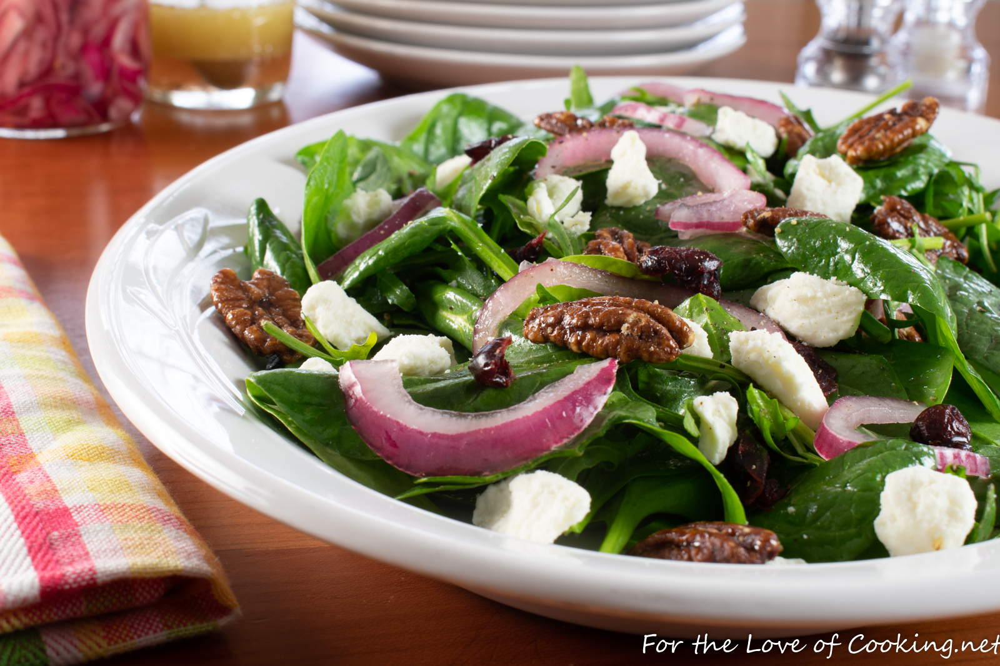

Cranberry, Feta, and Pecan Salad

Description
This is one of my favorite salad recipes, but I do not make it often because as salads go it isn't very healthy. It features a delicious vinaigarette, pecans, cranberries, feta, and quick pickled red onions.
Ingredients
Pickled Onions:
- 1/2 red onion, thinly sliced
- 1/4 cup seasoned rice vinergar
- Pinch of sugar
- Pinch of crushed red pepper flakes
Vinaigarette:
- 2 tbsp vegetable oil
- 2 tbsp olive oil
- 3 tbsp seasoned rice vinergar
- 1 tbsp red wine vinegar
- 1 clove of garlic, minced
- Pinch of sugar to taste
- Sea salt and black pepper to taste
Other Ingredients:
- 4 cups of baby spinach and arugula
- Feta cheese crumbles to taste
- Dried cranberries to taste
- Candied Pecans to taste
Steps
- Make the marinated red onion by combining the onion slices, seasoned rice vinegar, pinch of sugar, and pinch of crushed red pepper flakes together in a jar; stir well then seal with lid and place into the refrigerator for at least 1 hour.
- Make the vinaigrette by combining the vegetable oil, olive oil, seasoned rice vinegar, red wine vinegar, minced garlic, sugar, sea salt, and freshly cracked pepper, to taste together in a bowl; whisk until well combined. Set aside to allow flavors to mingle.
- Make the salad by combining the spinach and arugula together in a large bowl. Whisk the vinaigrette well then drizzle, to taste; toss until evenly coated.
- Place the salad on a serving plate then top with marinated onion, feta cheese crumbles, dried cranberries, and candied pecans. Season with freshly cracked black pepper, to taste. Serve immediately. Enjoy.